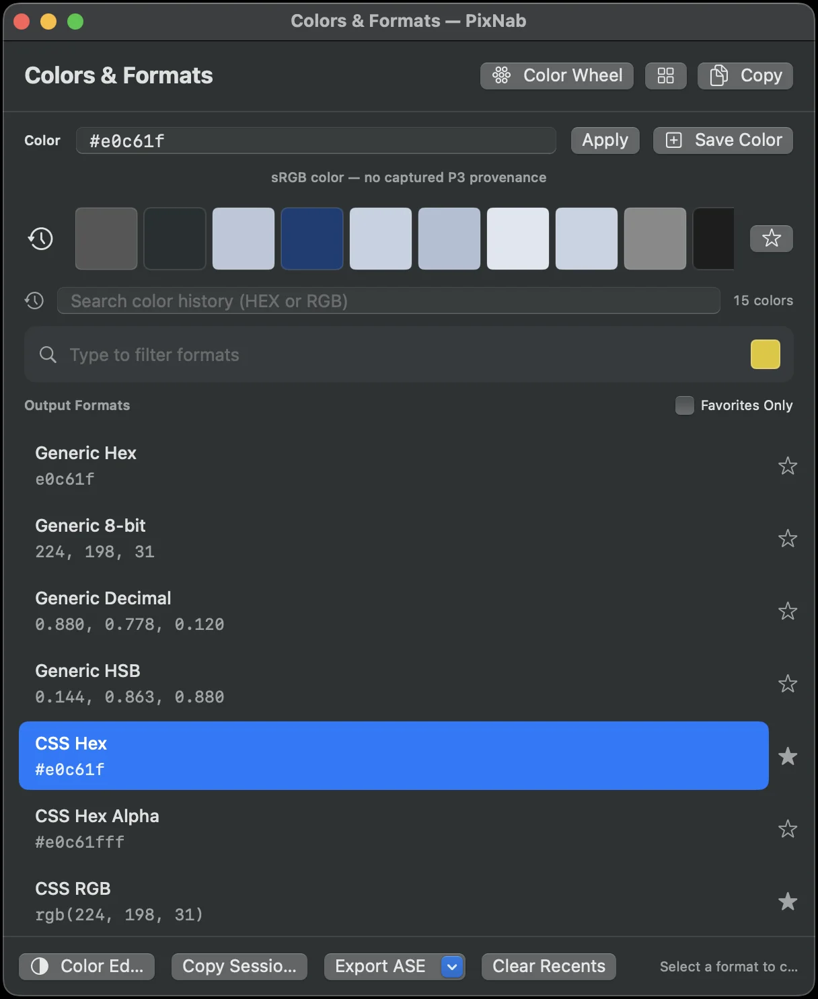
Colors & Formats
Edit colors, manage your history, and copy in 33 formats.
A powerful, native Mac color picker and color studio for designers and developers. Pick, explore, create palettes, compare colors, and export in any format.
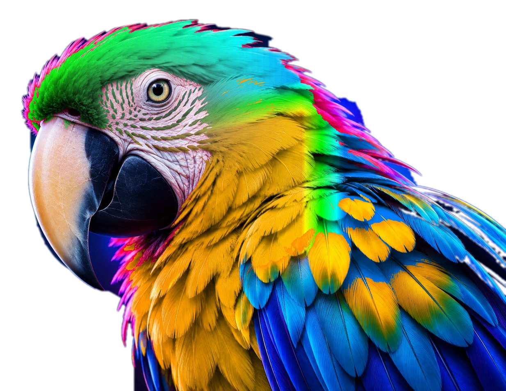
Pixel-perfect sampling with magnifier and arrow-key control.
Explore color harmony and create beautiful combinations.
Discover, build and manage palettes, scales and tokens.
Work with HEX, RGB(A), HSL(A), OKLCH, Lab, CSS, JSON and more.
COLOR STUDIO
A powerful studio to explore curated palettes, build your own, generate color scales, compare colors, and export design tokens.
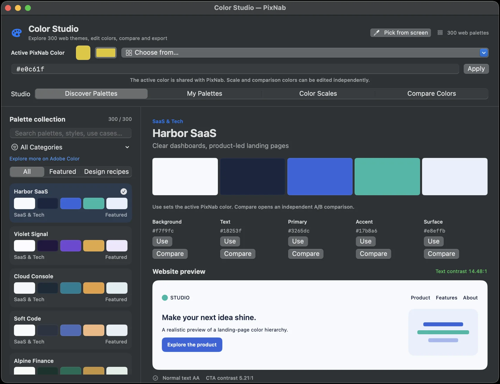
COLOR WHEEL
An interactive color wheel makes color relationships simple. Find complementary, analogous, triadic and tetradic harmonies, then use your palette in PixNab.
Select a color to copy its HEX value.
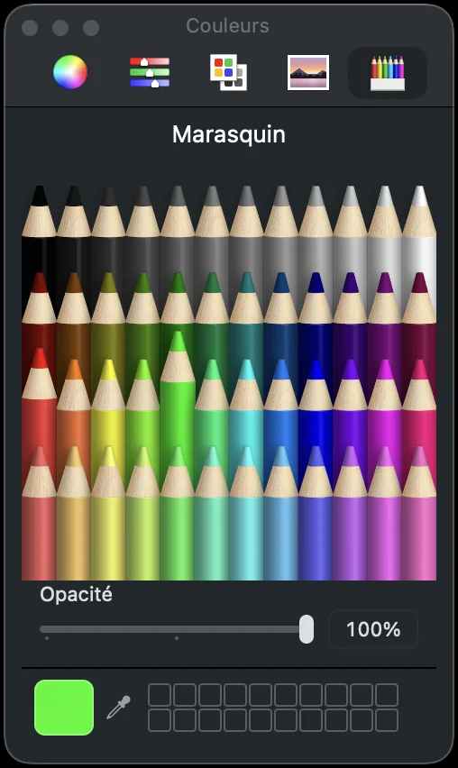
Opposite hues, strong contrast.
Neighboring hues, gentle balance.
Three hues evenly spaced.
Two complementary pairs.
Hue identifies the position on the wheel (0–360°). Saturation describes color intensity. HSL lightness spans from black (0%) through color (50%) to white (100%). HSL lightness is not perceptual brightness.
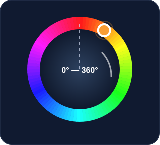
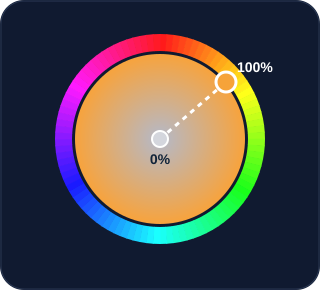
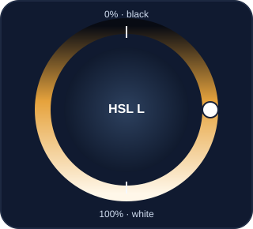
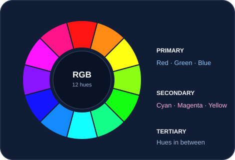
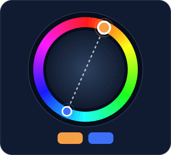
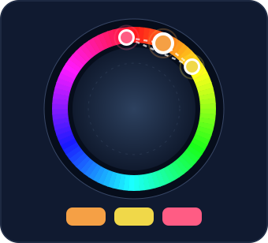
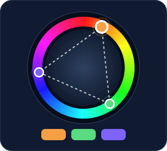
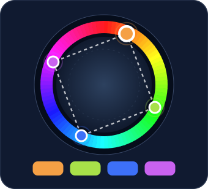
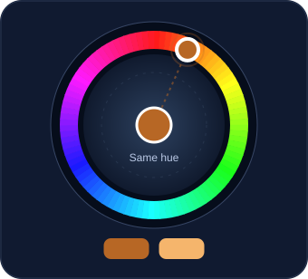
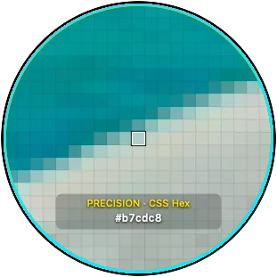
PRECISION PICKER
Zoom in, pick the exact pixel you need, and work with confidence. Use arrow keys for fine control and copy or export in your preferred format.
MORE POWERFUL TOOLS

Edit colors, manage your history, and copy in 33 formats.
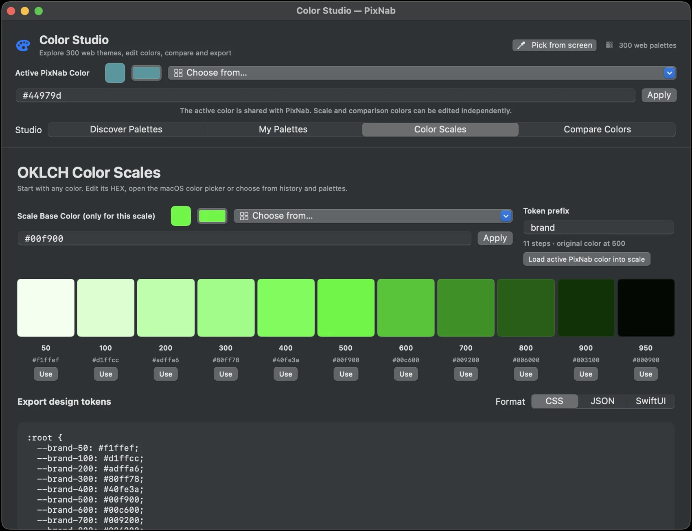
Generate perceptual scales and export design tokens.
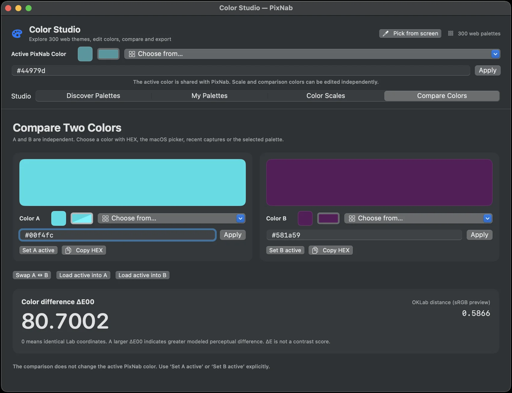
Compare two colors using ΔE00 and OKLab.
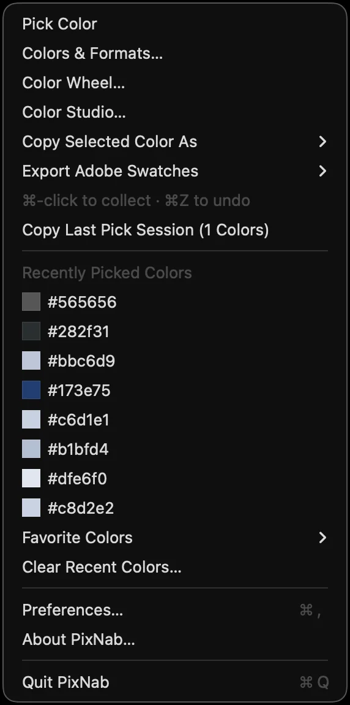
Pick colors anywhere using the convenient menu bar.
REAL APP SCREENSHOTS
The real app, not mockups. Explore all 12 current screenshots plus the native Color Wheel views.
Download PixNab and get a powerful, beautiful, native macOS color picker and color studio.